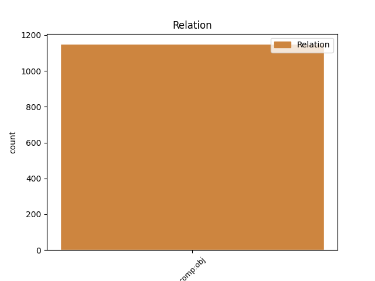
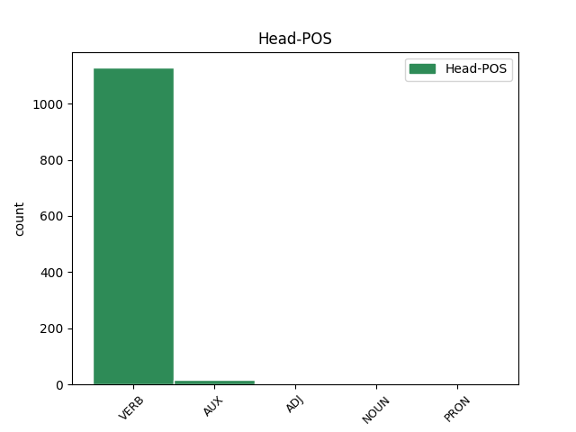
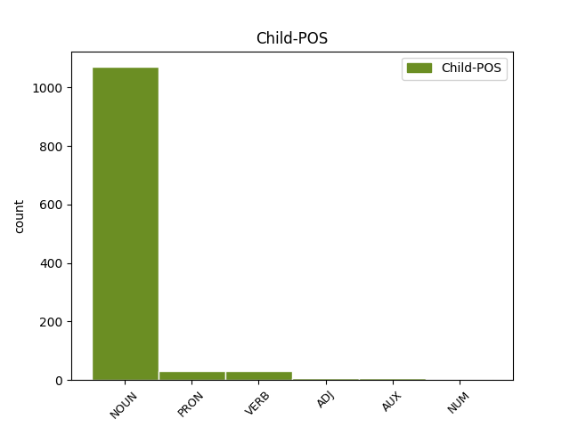

Distribution of features within this leaf



Agreement Rules sorted by frequency.
- When the dependent token is the direct object complements(comp:obj) of the head token,
1 עם _ _ _ _ 0 _ _ _
2 תחילת _ _ _ _ 0 _ _ _
3 ה _ _ _ _ 0 _ _ _
4 משחק _ _ _ _ 0 _ _ _
5 לא _ _ _ _ 0 _ _ _
6 הותיר הותיר VERB VERB Gender=Masc|HebBinyan=HIFIL|Number=Sing|Person=3|Tense=Past|Voice=Act 0 _ _ _
7 ה _ _ _ _ 0 _ _ _
8 גליל _ _ _ _ 0 _ _ _
9 ספק ספק NOUN NOUN Gender=Masc|Number=Sing 6 comp:obj _ _
10 באשר _ _ _ _ 0 _ _ _
11 ל _ _ _ _ 0 _ _ _
12 כוונה_ _ _ _ _ 0 _ _ _
13 _של_ _ _ _ _ 0 _ _ _
14 _הוא _ _ _ _ 0 _ _ _
15 . _ _ _ _ 0 _ _ _
Disagree Examples:
1 אנשי _ _ _ _ 0 _ _ _
2 מג"ב _ _ _ _ 0 _ _ _
3 חשו _ _ _ _ 0 _ _ _
4 אל _ _ _ _ 0 _ _ _
5 ה _ _ _ _ 0 _ _ _
6 פצוע _ _ _ _ 0 _ _ _
7 ו _ _ _ _ 0 _ _ _
8 הגישו הגיש VERB VERB Gender=Fem,Masc|HebBinyan=HIFIL|Number=Plur|Person=3|Tense=Past|Voice=Act 0 _ _ _
9 ל_ _ _ _ _ 0 _ _ _
10 _הוא _ _ _ _ 0 _ _ _
11 עזרה עזרה NOUN NOUN Gender=Fem|Number=Sing 8 comp:obj _ _
12 ראשונה _ _ _ _ 0 _ _ _
13 . _ _ _ _ 0 _ _ _
1 סופר _ _ _ _ 0 _ _ _
2 " _ _ _ _ 0 _ _ _
3 ה _ _ _ _ 0 _ _ _
4 ארץ _ _ _ _ 0 _ _ _
5 " _ _ _ _ 0 _ _ _
6 ב _ _ _ _ 0 _ _ _
7 ה_ _ _ _ _ 0 _ _ _
8 צפון _ _ _ _ 0 _ _ _
9 , _ _ _ _ 0 _ _ _
10 מוסיף הוסיף VERB VERB Gender=Masc|HebBinyan=HIFIL|Number=Sing|Person=1,2,3|VerbForm=Part|Voice=Act 0 _ _ _
11 : _ _ _ _ 0 _ _ _
12 יריות _ _ _ _ 0 _ _ _
13 נשמעו נשמע VERB VERB Gender=Fem,Masc|HebBinyan=NIFAL|Number=Plur|Person=3|Tense=Past|Voice=Mid 10 comp:obj _ _
14 אתמול _ _ _ _ 0 _ _ _
15 ב _ _ _ _ 0 _ _ _
16 שעה _ _ _ _ 0 _ _ _
17 2000 _ _ _ _ 0 _ _ _
18 ב _ _ _ _ 0 _ _ _
19 ה_ _ _ _ _ 0 _ _ _
20 ערב _ _ _ _ 0 _ _ _
21 ב _ _ _ _ 0 _ _ _
22 שפרעם _ _ _ _ 0 _ _ _
23 , _ _ _ _ 0 _ _ _
24 סמוך _ _ _ _ 0 _ _ _
25 ל _ _ _ _ 0 _ _ _
26 בית_ _ _ _ _ 0 _ _ _
27 _של_ _ _ _ _ 0 _ _ _
28 _הוא _ _ _ _ 0 _ _ _
29 של _ _ _ _ 0 _ _ _
30 ראש _ _ _ _ 0 _ _ _
31 ה _ _ _ _ 0 _ _ _
32 עירייה _ _ _ _ 0 _ _ _
33 , _ _ _ _ 0 _ _ _
34 איברהים _ _ _ _ 0 _ _ _
35 נימר _ _ _ _ 0 _ _ _
36 חוסיין _ _ _ _ 0 _ _ _
37 . _ _ _ _ 0 _ _ _
1 ב _ _ _ _ 0 _ _ _
2 כפר _ _ _ _ 0 _ _ _
3 בלעא _ _ _ _ 0 _ _ _
4 ב _ _ _ _ 0 _ _ _
5 נפת _ _ _ _ 0 _ _ _
6 טול _ _ _ _ 0 _ _ _
7 כרם _ _ _ _ 0 _ _ _
8 תקפו תקף VERB VERB Gender=Fem,Masc|HebBinyan=PAAL|Number=Plur|Person=3|Tense=Past|Voice=Act 0 _ _ _
9 שלושה _ _ _ _ 0 _ _ _
10 רעולי _ _ _ _ 0 _ _ _
11 פנים _ _ _ _ 0 _ _ _
12 ב _ _ _ _ 0 _ _ _
13 סכינים _ _ _ _ 0 _ _ _
14 רופא רופא NOUN NOUN Gender=Masc|Number=Sing 8 comp:obj _ _
15 מקומי _ _ _ _ 0 _ _ _
16 ד"ר _ _ _ _ 0 _ _ _
17 עפיף _ _ _ _ 0 _ _ _
18 ברברח _ _ _ _ 0 _ _ _
19 , _ _ _ _ 0 _ _ _
20 בן _ _ _ _ 0 _ _ _
21 03 _ _ _ _ 0 _ _ _
22 , _ _ _ _ 0 _ _ _
23 ש _ _ _ _ 0 _ _ _
24 אושפז _ _ _ _ 0 _ _ _
25 ב _ _ _ _ 0 _ _ _
26 מצב _ _ _ _ 0 _ _ _
27 קשה _ _ _ _ 0 _ _ _
28 ב _ _ _ _ 0 _ _ _
29 בית _ _ _ _ 0 _ _ _
30 ה _ _ _ _ 0 _ _ _
31 חולים _ _ _ _ 0 _ _ _
32 אל _ _ _ _ 0 _ _ _
33 איתיחאד _ _ _ _ 0 _ _ _
34 ב _ _ _ _ 0 _ _ _
35 שכם _ _ _ _ 0 _ _ _
36 . _ _ _ _ 0 _ _ _
1 שר _ _ _ _ 0 _ _ _
2 ה _ _ _ _ 0 _ _ _
3 ביטחון _ _ _ _ 0 _ _ _
4 משה _ _ _ _ 0 _ _ _
5 ארנס _ _ _ _ 0 _ _ _
6 ערך _ _ _ _ 0 _ _ _
7 אתמול _ _ _ _ 0 _ _ _
8 ביקור _ _ _ _ 0 _ _ _
9 מפתיע _ _ _ _ 0 _ _ _
10 ב _ _ _ _ 0 _ _ _
11 רצועת _ _ _ _ 0 _ _ _
12 עזה _ _ _ _ 0 _ _ _
13 ו _ _ _ _ 0 _ _ _
14 שמע שמע VERB VERB Gender=Masc|HebBinyan=PAAL|Number=Sing|Person=3|Tense=Past|Voice=Act 0 _ _ _
15 דיווחים דיווח NOUN NOUN Gender=Masc|Number=Plur 14 comp:obj _ _
16 על _ _ _ _ 0 _ _ _
17 ה _ _ _ _ 0 _ _ _
18 התפרעויות _ _ _ _ 0 _ _ _
19 שם _ _ _ _ 0 _ _ _
20 , _ _ _ _ 0 _ _ _
21 ה _ _ _ _ 0 _ _ _
22 נמשכות _ _ _ _ 0 _ _ _
23 זה _ _ _ _ 0 _ _ _
24 ה _ _ _ _ 0 _ _ _
25 יום _ _ _ _ 0 _ _ _
26 ה _ _ _ _ 0 _ _ _
27 שני _ _ _ _ 0 _ _ _
28 ב _ _ _ _ 0 _ _ _
29 רציפות _ _ _ _ 0 _ _ _
30 . _ _ _ _ 0 _ _ _
1 ב _ _ _ _ 0 _ _ _
2 עת _ _ _ _ 0 _ _ _
3 ה _ _ _ _ 0 _ _ _
4 ביקור _ _ _ _ 0 _ _ _
5 שמע שמע VERB VERB Gender=Masc|HebBinyan=PAAL|Number=Sing|Person=3|Tense=Past|Voice=Act 0 _ _ _
6 ה _ _ _ _ 0 _ _ _
7 שר _ _ _ _ 0 _ _ _
8 סקירות סקירה NOUN NOUN Gender=Fem|Number=Plur 5 comp:obj _ _
9 מ _ _ _ _ 0 _ _ _
10 אלוף _ _ _ _ 0 _ _ _
11 פיקוד _ _ _ _ 0 _ _ _
12 ה _ _ _ _ 0 _ _ _
13 דרום _ _ _ _ 0 _ _ _
14 ו _ _ _ _ 0 _ _ _
15 מ _ _ _ _ 0 _ _ _
16 מפקדי _ _ _ _ 0 _ _ _
17 צה"ל _ _ _ _ 0 _ _ _
18 ב _ _ _ _ 0 _ _ _
19 ה_ _ _ _ _ 0 _ _ _
20 רצועה _ _ _ _ 0 _ _ _
21 , _ _ _ _ 0 _ _ _
22 ו _ _ _ _ 0 _ _ _
23 ביקר _ _ _ _ 0 _ _ _
24 ב _ _ _ _ 0 _ _ _
25 בית _ _ _ _ 0 _ _ _
26 - _ _ _ _ 0 _ _ _
27 חאנון _ _ _ _ 0 _ _ _
28 . _ _ _ _ 0 _ _ _